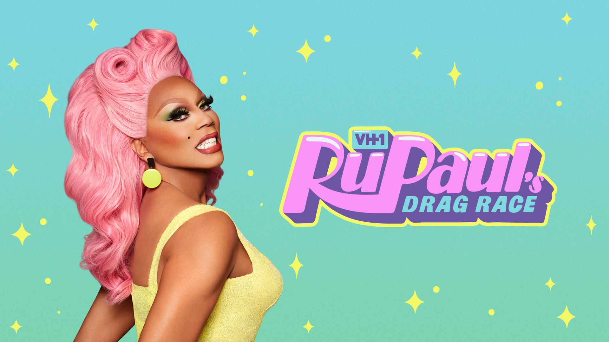

Posted on 2nd April 2021
I remember coming across the programme Drag Race many years ago and I watched for a very short time before dismissing the program and never watching it again for 5-10 years.
What made me dismiss it? It could have been a number of things. I guess in my mind my first impression was that I was watching a lot of gay guys being bitchy and self absorbed and I was not inspired. Ironically at the time I too was quite self absorbed myself, but whatever the program was selling at that time I was not buying, it was not me.
It is crazy to think that when I was a child I dreamt of being a Drag Queen but maybe at this time the label I had adopted stopped me from identifying with the girls and the programme.
Fast forward to 2021, as we come to the end of a year long lock down, and other than this a lot has happened. I would say I am a very different person in my thoughts and my perception of things. I cam across by chance a video of Rupaul in drab (male persona) talking to Oprah Winfrey about Drag race and how it was not all that it seems. He went on to say that this programme was a platform to help people who do not get a lot of representation in the world, and that in each episode he would seek to give them all guidance not just as Drag Queens but as people in general to help them grow. I decided to watch some episodes with my new found perception, being someone now who loves self improvement and spiritual growth. Something happened that I cannot explain and I began to see the beauty of the programme that I could not, or was not able to see before. To quote one my favourite authors:
“If you change the way you look at things, the things you look at change.”
Dr Wayne Dyer
I became hooked and began to watch 4-6 episodes a day, and as I write this I have watched over 12 series in a row and in a very short space of time. I have cried, I have laughed and I have related so many times to the conversations and personalities to the point that it has moved me in a way I needed to be moved.
What I had failed to realise before as I had for decades, was that I spent my life watching films and programmes and watched life around me which was predominantly about people and lives I did not fully relate too. In watching Drag Race there have been so many things said that resonate with me and that I have in fact said to myself, all of which I was not normally seeing in my usual screening of life. I made me happy and awake.
I had initially dismissed the programme because I did not think it was relevant to me and my life but this was foolish as I now see that there is more relevance in one single episode than at least a year of my previous year and tv watching. I was not getting a picture of the world I wanted to belong to so I disengaged and become passive.
I feel I have learnt a lot about myself and obviously now realise the error of my earlier years. Rupaul often says in interviews “you have to find your tribe”. When I look around my life over the past few years, the majority of those people I had in my life on a daily basis and I realise I hadn’t found my tribe. I still had the constructs of my straight life from when I was in the closet. It is never too late however and so my vision for the future is to do just that and attract like minded people into my life into my life. A group of people who can be who they want to be with no compromises, so that we can all grow and spread our wings.
I have a desire to create an LGBTQ social group with sports activities, nights out, excusions away and a general community spirit. If you are reading this and you think you might be interested, please do not hesitate and contact me straight away….let’s get this started.
That’s it for now, stay positive and remember to love yourself ("If you can't love yourself, how the hell you gonna love somebody else, can I get an Amen..." - Rupaul),
Love Natasha
X